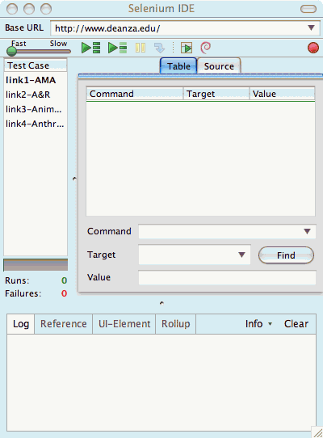

There are 22 questions on this exam, 21 short-answer and 1 programming.
Your best 20 questions will be graded. This means that you can do all
22, miss 2, and still get a 100%. Or you can choose not to do any two
questions (including programming
problem) if you're short on time and/or long on confidence!
Please keep your short answers short and neat! Only a
few words are required to answer each question.
When you have finished the short-answer questions, write
your name at the top of the exam and hand it in to me. I will hand you
another sheet that contains just question 22. You can then turn
on your computer and work on that question.
Good luck!
- Write a Selenium regular expression that
will produce exactly the same results as the globbing pattern
below, regardless of the input page used.
<td>glob:Hush...Hush</td>
- Write a Selenium globbing pattern that
will produce exactly the same results as the regular
expression pattern below,
regardless of the input page used.
<td>regexp:In.*Life</td>
- Which SIDE feature allows the user to run a test from
the beginning to a particular command in Table mode?
You may answer with either the name of this feature or
a description of its glyph.
- What type of URL has been specified as an argument to
the open command below?
<td>open</td>
<td>/spring_2008/selenium/course-materials/class-05.html</td>
- If one wanted to access the value of a SIDE variable
named "month" from within a JavaScript snippet in a
test case, what would be the syntax for that access?
- How could the following regular expression be
rewritten to be more concise?
regexp: [A-Za-z].*[b-df-hj-np-tv-zB-DF-HJ-NP-TV-Z]
- How could the following regular expression be
rewritten to be more concise?
regexp: [A-Z]+[0-9]{1}[A-Z]+
- What code would be needed to display the value of
a SIDE variable named result in the log file?
(Just the value is sufficient; no labeling is required.)
- What do xpath arguments to Selenese commands
start with?
- What regular expression could be used to match a
single question mark?
- Which open-source organization maintains and enhances
SIDE?
- How can one best provide vertical "white space" between
sections of a test in order to aid readability?
- Given the SIDE status shown below, what are the
two steps needed to run just the second test case, the
one starting with "link2?" Be as concise as possible
in your description of the steps.

- What are one-column tables used for within SIDE?
- What is the title of a test case
based on?
- What Selenese command and arguments are needed to
put the value "Today is the midterm" (minus the quotes)
in a SIDE variable named "motd?"
- Complete the Selenese command below, assuming
that the regular expression one wants to search for
is "[^a-zA-Z]{4}" (without quotes). This is a
question about syntax.
storeEval | this.browserbot.bodyText().match_____________
- Describe as succinctly as possible what the regular
expression in the last question will match.
- List five strings that would match the following
regular expression:
regexp:[XZ]A|E|I|O|U[ZX]
- What type of argument does your instructor recommend
using with the open command? You may answer this
via an example OR the correct term.
- Describe as succinctly as possible what the following Selenese command and arguments do.
storeExpression | javascript{selenium.browserbot.getCurrentWindow().state} | mystery